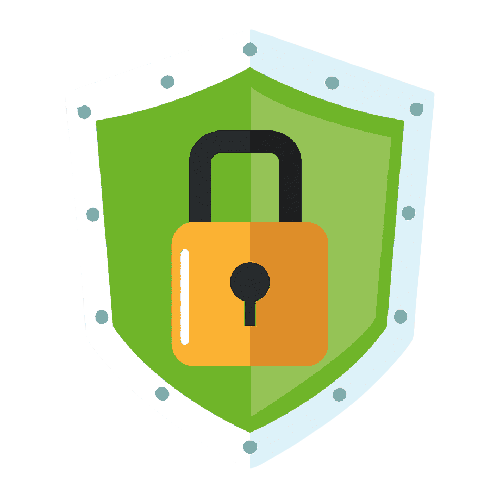

¿Comó proteger nuestra información en internet?

Para proteger la información recomendamos poner en práctica algunas técnicas y medidas de privacidad:
- Utiliza aplicaciones de mensajería instantánea y para envío e intercambio de archivos con tecnología de cifrado de extremo a extremo con esto evitamos la interceptación de archivos y comunicaciones.
- Protege archivos que contengan información sensible o confidencial con contraseñas, puedes incluso configurarlos como “sólo lectura”.
- Implementa un método de protección para navegar en internet, como una aplicación de anonimato con la cual podrás proteger tu privacidad en el ciberespacio.
- Puedes hacer uso de programas para cifrar unidades de almacenamiento como una unidad de disco duro u otros dispositivos móviles.
- Presta atención a las condiciones de uso de los servicios digitales como correo electrónico, redes sociales, entre otros, y no des ninguna información y dato que no quieras dar.
- Actualiza tus aplicaciones y sistemas operativos de tus dispositivos con acceso a Internet.
- Crea contraseñas seguras y actualízalas periódicamente.
- Cierra siempre las sesiones (Si utilizas un dispositivo que no es el tuyo, acuérdate siempre de cerrar sesiones una vez hayas acabado)